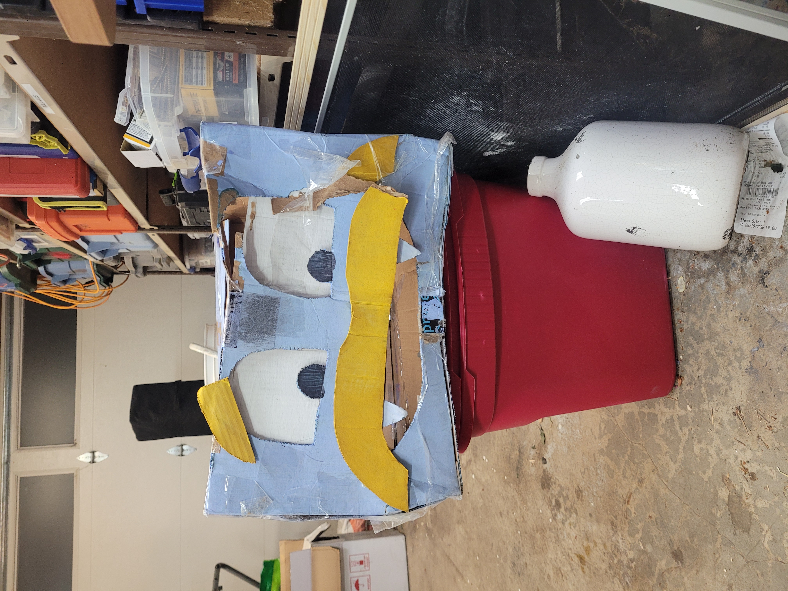
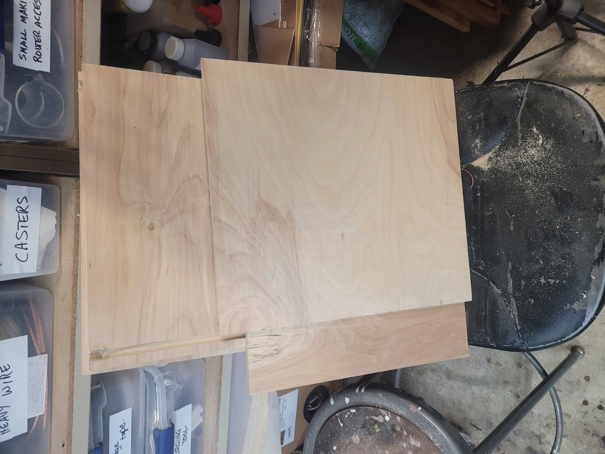
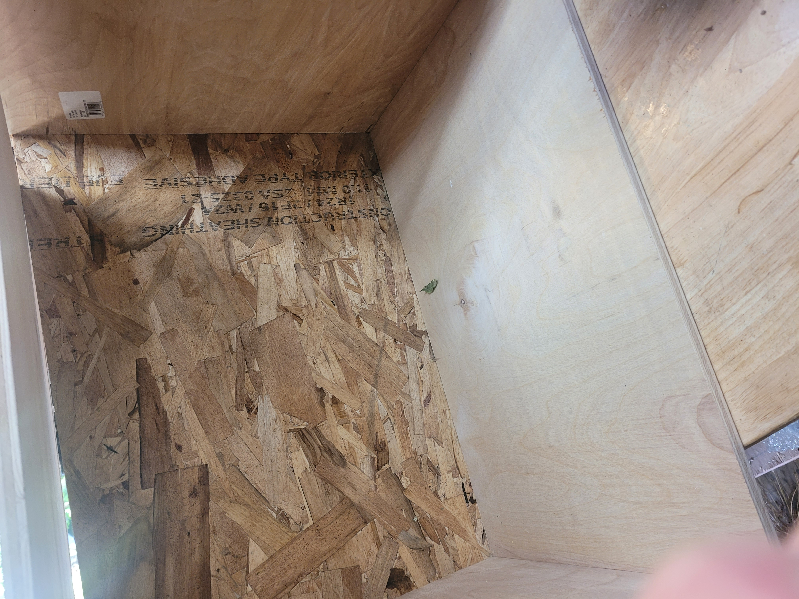
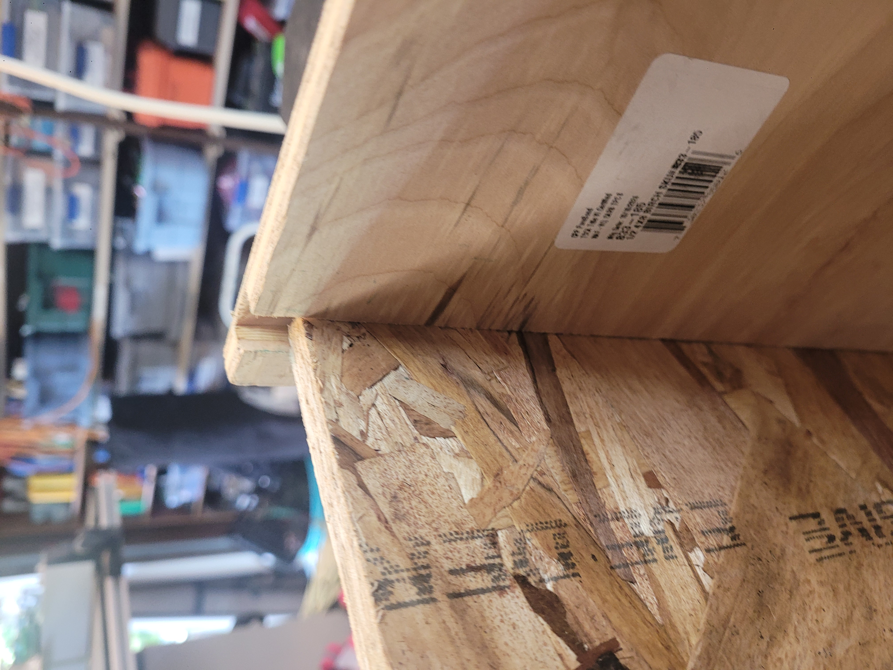

Prepping the SVG in Inkscape
Sun Jul 26
03:42:48 PM PDT 2026 by Daniel
Following the advice from Gemini, I need to fix/change svg/scrappy.svg,
so I make a copy of him at svg/scrappy-wood.svg
.
It takes quite a while, and many operations and questions
to Claude about using Inkscape to get the drawing organized
into layers per CNC operation.
Claude originally generated a bunch of individual .svg
files, which I put into a directory called svg/scrappy-wood/.
The result is svg/scrappy-wood/scrappy.svg
shown below (which doesn't look like much, but is actually
much simplified from its original form).
![]()
The next step is to use something like FlatCAM to import the .svg
file into a form which can be converted to g-code.
My first blog entry
A headline/comment/summary of what this blog
entry is about.
2025-06-01 21:22 (UTC-7) by Daniel
I did a .fork of https://github.com/pflagerd/blog-bootstrap
We get some advice from Claude AI on how to get from
Inkscape to CNC machine.
2025-06-01 21:22 (UTC-7) by Daniel
In Claude AI's UI, I found the chat and shared it
privately.
I opened the shared chat in another Chrome window and then
used the singleFile Chrome extension to export the
conversation with Claude AI to an html file.
But that file was weirdly completely blank visibly -
although the file was huge
Tried a different approach. I copied and pasted from the
browser into a new LibreOffice Writer document, and saved
that document as HTML
That process involved using the File | Export function, and
then changing the output format to be HTML.
Where are we?
Mon Jul 20 03:28:56 PM PDT 2026 by Daniel
Already kind of got started on the project before setting
up this blog.
When the original scrappy came to us, he was in pretty
sorry shape (here he is in the garage):

Seems he had been torn up and thrown away by janitorial
staff, so we brought him upstairs so we could measure him.

We measured his body dimensions as best we could, and then cut away all the broken material except for his face. Notice that he's missing his left eyebrow. We actually still had that, but both eyebrows are the same shape, so I could have cut a mirror image of the original and used that.
Anway, here's what he looks like after cutting away his body..

Having measured his body dimensions, we cut out
a new wooden body for him, based on those.
Now, his body is 16" high, 18" wide, and 24" deep.
His new body is made mostly of 1/2" smooth birch veneer plywood:
from Home Depot Bothell (#4712). The actual product is 1/2 in. x 4 ft. x 8 ft. PureBond Birch Plywood

His bottom (underside) is made of a kind of outdoor-capable
composite board. It's very strong.

The bottom and sides are fit together with a router-cut
trench

Poor guy was missing his mustache and an eyebrow, but we
put his face right as best we could. His face is now almost 16" (15⅞") wide and 18" () high:
Then we traced his mouth and eye shape onto a piece of
paper with a mechanical pencil.

We used Inkscape to import a picture of his flattened face
and used Inkscape to trace out the outline of his eyes and
mouth.

We then used Inkscape to fill in his mouth and pupils,
thinking we might draw him onto the wood with a laser
etcher/engraver.

But after much experimentation, we realized that the laser
wasn't going to be the right tool for the job.
We might be able to use the laser to draw his pupils, but
what we really need to do is carve recesses for the whites
of his eyes, and then paint them white.
Then we'll cut a hole for his mouth.
His teeth can be painted white too, but we decided not to
recess them because that would weaken them a bit.
My first blog entry
Mon Jul 20 01:48:51 PM PDT 2026 by Daniel
I did a .fork of https://github.com/pflagerd/blog-bootstrap